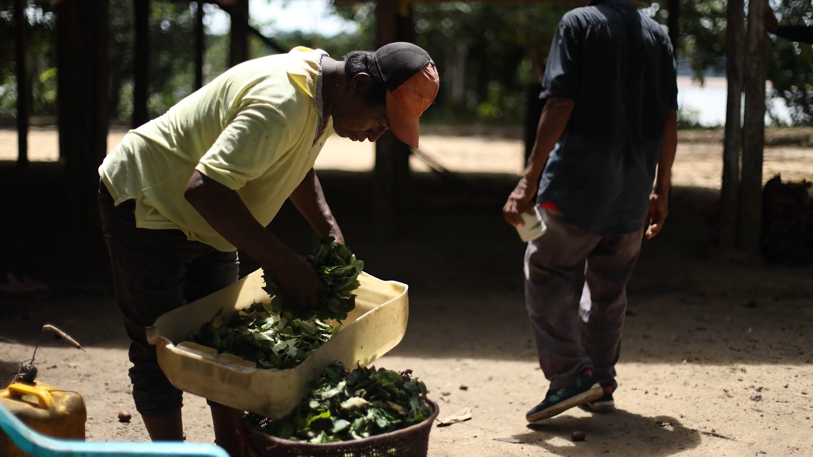

AMAZONAS
AMAZONAS
AMAZONAS
En 2025, por invitación del geógrafo magüta Jhon Sebastián Parente Aránbula, el semillero inició un proceso de acompañamiento al fortalecimiento cultural de la Comunidad Indígena Castañal de Los Lagos, del pueblo magüta, ubicada en los kilómetros 2.5 y 23 vía Leticia-Tarapacá. Durante este año se trabajó de manera articulada con el semillero Tramas —antes llamado Tramas Textiles—, dirigido por la profesora del Departamento de Diseño, Eliana Sánchez-Aldana.
A lo largo de cuatro salidas de campo con estudiantes, se organizaron encuentros, talleres de mediación y se acompañó la construcción de alianzas entre líderes comunitarios de resguardos aledaños. En el marco de este proceso se fue consolidando una relación de trabajo con un grupo de abuelas de la comunidad.
Ta mueta II:
Namaa ta Kua
Namaa ta Kua fue un proyecto de los semilleros Amanecer la Palabra y Tramas Textiles de la Universidad de los Andes, Bogotá.
Desde la primera entrada a territorio se empieza a tejer una alianza con el profesor Abel Santos Angarita, de la Universidad Nacional de Colombia, Sede Amazonía quien nos asesora en la publicación de la serie de impresos Magütágüchiga que se centran en el tejido y el territorio para fortalecer la lengua y la cultura en la comunidad. En diciembre del 2026, organizamos un encuentro para hacer entrega del impreso y organizar una serie de eventos de cierre del año. Este encuentro se centró en el tejido y el territorio para fortalecer la lengua y la cultura en la comunidad magüta en Castañal Los lagos (km 2.5 vía Leticia Tarapacá) y en la sede Banco de la República en Leticia.

Productos
ENCUENTROS NAMAA TA KUA
(BUEN TRATO A LO SEMBRADO)
Los semilleros Tramas y Amanecer la Palabra definieron dos espacios para el encuentro Namaa ta kua —buen trato a lo sembrado—, uno en Castañal Los Lagos y el otro en el Centro Cultural del Banco de la República. En el primer encuentro entregamos a las abuelas magüta y a su comunidad lo construido a lo largo del proceso, fruto de la generosidad con la que compartieron sus saberes y enseñanzas alrededor del tejido.
EVENTO DE MEDIACIóN EN LA COMUNIDAD INDÍGENA DEL CASTAÑAL LOS LAGOS
-
Conversatorio de Abuelas, entrega de Magütagüchiga
-
Concursos: de lengua magüta, Juegos tradicionales
Para conocer en detalle los eventos visite la bitácora en donde está el informe completo.


Socialización Centro Cultural del Banco de la República en Leticia Amazonas
Evento gestionado por el Semillero Tramas.
-
Las Plantas a través de la Palabra: conversatorio Anitalia Pijachi Kuyuedo, lideresa del pueblo Okaina y Sandra Fernández, lideresa del pueblo magüta,
-
Taller de tejido magüta a cargo de Ema Santos del pueblo magüta.
Para conocer en detalle los eventos visite la bitácora en donde está el informe completo.


-
En ambos encuentros se realizaron:
Estampación en serigrafía de camisetas con palabras en lengua Magüta, esto se llevó a cabo en El Castañal, Nazareth y el centro Cultural del Banco de la república.


-
Proyección del video Naane: Video realizado para proyectarse en el marco del Encuentro Namaa ta Kua (Buen trato a lo sembrado).
Realización: María Margarita Jiménez y Sara Marcela Gutiérrez.
Cámara: María Margarita Jiménez, Sara Marcela Gutiérrez, Jonnathan Fetecua, Eliana Sánchez-Aldana.
Animaciones: María Margarita Jiménez y Juan Cortez.
Música: Juan Cortez.
Diseño sonoro: Eileen Geraldine Flórez Hernández
Magütágüchiga (historias Magüta)
Serie de impresos ilustrados por: Juanita Camargo, Sophia Herrera, Matías Lozano, María Margarita Jiménez.
Diseño: Eliana Sánchez y Sofía Escobar.
Textos: Abel Santos, John Sebastian Parente, Eliana Sánchez-Aldana y Maria Margarita Jiménez.
Traducción a magüta: Abel Santos Angarita.
Impresos en el taller de Risografía del departamento de Diseño


CONVOCATORIA
EQUIPO
FECHA
Ministerio de Cultura - Beca de Movilidad 2025 (Semillero Tramas)
Convocatoria ArqDis (Semillero Tramas)
Semillero Tramas
Semillero Amanecer la Palabra
Lanzamiento
14 de diciembre de 2025

Ta Mueta I:
Sembrar Bien
El encuentro Sembrar Bien, realizado por el semillero Amanecer la Palabra y Tramas textiles coordinado por la profesora Eliana Sánchez del departamento de Diseño, tuvo como objetivo generar un espacio de diálogo y convivencia orientado a la construcción colectiva de una red de pensamiento y saberes, con proyección hacia el conjunto de la comunidad. La actividad buscó facilitar un lugar de reunión que permitiera a la comunidad del Castañal rememorar la lengua que el territorio conserva y propiciar su paulatino fortalecimiento.
Como resultado esperado del encuentro, se avanzó en la construcción de un glosario en torno al tejido, concebido para su posterior difusión a través de distintos medios —impresos y audiovisuales— que fueron entregados a la comunidad en diciembre 2025.
Productos
Ta Mueta I: Sembrar Bien
Se llevó a cabo la invitación a diecisiete (17) personas del pueblo Magüta para participar en un encuentro de una noche y un día realizado en el kilómetro 23. Como resultado esperado del encuentro, se avanzó en definición del tema de estudio (Cernidor o Küechinü) y la construcción de un glosario en torno a este, concebido para su posterior difusión a través de distintos medios —impresos y audiovisuales— y para su entrega a la comunidad en el mes de diciembre.
Encuentro de apertura 26 De Septiembre — Resguardo Km 23:
La abuela María Helena abrió el encuentro con una armonización que dispuso el ánimo colectivo y creó un clima de recogimiento y respeto. Luego, cada participante y el equipo del semillero se presentaron con el propósito de pedir consejo a las sabedoras del territorio. Este gesto inicial situó el espacio desde la escucha y la reciprocidad, reconociendo la autoridad del conocimiento ancestral y la necesidad de “caminar la palabra” antes de emprender cualquier acción colectiva.


Salida al monte y encuentro de tejido 27 de septiembre
Después de un desayuno comunitario, nos preparamos para la caminata siguiendo la guía de la abuela Maria Helena quien nos explicó cómo pedir permiso con tabaco, copal, respeto e intención para entrar al monte antes de iniciar la caminata. Más que una caminata el recorrido fue una metodología viva para aprender, recordar y dialogar.


28 De Septiembre — Resguardo Km 23
La jornada cerró con el acuerdo de continuar el proceso desde la caminata, la palabra compartida y el respeto por los ritmos del territorio. Regresamos a la casa con depe y chambira, las abuelas empezaron a tejer escobas y cernidores, quienes no sabíamos cómo hacerlo nos acercamos a aprender y si espontáneamente fueron surgiendo ideas y caminos posibles para seguir sembrando bien desde el conocimiento y la práctica del tejido Magüta.


Talleres de lingüística Universidad Nacional sede Amazonas - 1 de octubre
Los miembros de los semilleros planeamos dos jornadas de trabajo con el profesor Abel Santos Angarita, en las cuales le consultamos la idea de construir un glosario a partir de la experiencia de recolección de la planta de depe para el tejido del cernidor -Küechinü- los días del encuentro con las abuelas. Las jornadas de trabajo se transformaron en un mambeadero alrededor de un tablero sobre el cual el profesor Abel nos introdujo a la naturaleza rizomática o miceliar del pensamiento magüta. Estas jornadas nos demostraron que ese glosario tendría que ser miceliar.


CONVOCATORIA
EQUIPO
FECHA
Autogestionado
Beca CIC
Semillero Amanecer la Palabra
Semillero Tramas
Lanzamiento
26 de septiembre y el 4 de octubre.
Numae Naane
—Hola TERRITORIO—
Para este primer acercamiento quisimos crear espacios para compartir saberes con la comunidad, organizamos y ofrecimos dos talleres: uno de audiovisual y uno de dibujo, y facilitamos dos espacios: uno de tejido y otro de tintes naturales, en los cuales fueron los abuelas y abuelos quienes nos enseñaron. Fueron 3 días de taller y un día de socialización de resultados. Luego, algunas personas de la comunidad nos llevaron al resguardo en el Km 23, en casa de Doña Mery y el tío Mañuco donde conocimos más del naane (cuerpo/territorio/tonco) de la gente de agua.
Ver Más
Productos
Numae Naane —Hola TERRITORIO—
Productos de mediación
Dictado por el semillero Amanecer la Palabra al grupo de danza Hijos del Huito.
Taller audiovisual — Abril 16 y Abril 18, 2025
El Semillero Amanecer la palabra, por la invitación de Jhon Sebastián Parente, uno de sus miembros, visita por primera vez a la comunidad Indígena Castañal de los Lagos. Decidimos acercarnos a la comunidad desde el intercambio de saberes, de manera que organizamos y ofrecimos dos talleres desde nuestros conocimientos: uno de audiovisual y uno de dibujo. Además tuvimos dos encuentros para intercambiar saberes con la comunidad, uno de tejido y uno de tintes naturales. Organizamos 3 días de encuentros y talleres, y un día de socialización de resultados.


taller de dibujo — Abril 16 y Abril 18, 2025
Dictado por el semillero Amanecer la Palabra a los niños de la Comunidad Indígena de Castañal de los Lagos.


Espacios de tejido— Abril 16 y Abril 18, 2025
Compartir de saberes de abuelas y abuelos de Comunidad Indígena de Castañal de los Lagos a personas de la comunidad y a el Semillero amanecer la Palabra.


espacio de tintes naturales — Abril 17, 2025
Compartir de saberes de abuelas de Comunidad Indígena de Castañal de los Lagos a personas de la comunidad y a el Semillero amanecer la Palabra.


CONVOCATORIA
EQUIPO
FECHA
Estímulo para semilleros CIC
Semillero Amanecer la Palabra
Abril 2025
BOGOTÁ
BOGOTÁ
BOGOTÁ
Guardianes de lo invisible
A partir de una investigación sobre el pensamiento de algunos pueblos de la Amazonía, que inicia en el periodo intersemestral del 2024, se decide coordinar la ejecución de un mural para crear conciencia sobre el trabajo que viene haciendo las Asociaciones de autoridades Tradicionales -AATI- que contribuyen al ejercicio de protección de los pueblos indígenas en aislamiento voluntario o pueblos indígenas en Estado Natural, en particular los que habitan en PNN Río Puré y también sobre los derechos de dichos pueblos.
Ver Más
Productos
Guardianes de lo invisible
2024
Agosto / empaparse
El semillero inicia como un grupo intercultural conformado por profesionales de distintas disciplinas, estudiantes universitarios, dos jóvenes indígenas amazónicos, entre ellos Jhonyl Muca, Jhonier Márquez y Jhon Sebastián Parente, geógrafo perteneciente al pueblo magüta. De esta juntanza entre jóvenes líderes de sus territorios y la comunidad universitaria se produce el intercambio de saberes que tendría como resultado un mural cuyo tema central sería, las comunidades indígenas en aislamiento voluntario y las organizaciones que les protegen. En esta etapa Jhon Sebastián Parente dió una charla sobre Descolonización cartográfica abierta al público.


Septiembre / bocetación
Inicia la bocetación del mural con sesiones de dibujo y planificación colectiva en torno a lo aprendido. Jhonier, artista del Territorio Amazónico, aporta sus bocetos, que dan forma a la estructura general: en el centro las comunidades aisladas y alrededor las cuatro organizaciones que les protegen: AIZA; PANI; AIPEA y CIMTAR.
Mediante largas horas de discusión, los símbolos se resignifican, se discuten y se incorporan al mural como parte de un relato compartido. Estos días dibujamos, compartimos estilos y configuramos parte de la estructura principal del mural. hacia el final de este proceso organizamos y compartimos al público interesado una charla con Gabriel Ramírez, antropólogo sobre la situación actual del pueblo embera en en la ruralidad y las ciudades. Todo este proceso se dió como una forma de mirar las convivencias - lo chixi- de las comunidades indígenas con la comunidad académica.


Octubre / A pintar
Dos procesos simultáneos se comienzan: pintar el mural y hacer la chicha. En este camino, además de fortalecer lazos y dinámicas colectivas, surgen dilemas propios de la creación, como la elección de la paleta de color, que genera debates y tensiones. Organizamos una juntanza llamada “Torbellino grafitero y taller de chicha” en la que tendríamos un tallerista de graffiti: Maczero y una heredera de la hechura de chicha de San Gil. En una jornada de un día abierta al público. Una juntanza para empezar a pintar articulados.
Interludio
Cada sábado nos reunimos a pintar en el muro, a veces también nos encontrábamos entre semana. Avanzamos en algunas partes.


Noviembre / Lanzamiento del mural
Aun cuando la obra no estaba del todo terminada, se realiza el lanzamiento del mural. El encuentro es un momento para compartir aprendizajes, superar tensiones y afianzar el trabajo colectivo desde el diálogo y la escucha. En la jornada se comparten casabe, chicha y mambe. Pusimos la fogona a hacer casabe para comer con tipití y escuchamos la palabra de quienes habían acompañado el proceso: Jhonyl, Jhonnier, y Jhon Sebastian.

2025
iNTERLUDIO: VIAJE A CASTAÑAL
El semillero abre una nueva etapa con la preparación de un viaje al Amazonas, para encontrarse con la comunidad del Castañal. El mural queda en pausa, mientras crece la expectativa por llevar el proceso más allá de la universidad. El viaje al Amazonas afianza profundamente el proceso de creación al entrar en contacto directo con el territorio. La experiencia se construye al hablar, compartir y convivir con la comunidad, reconociendo que las imágenes del mural están inscritas en su vida social y entablando diálogos sobre la cosmovisión magüta y su simbología.
Interludio
Volvimos a reunirnos los sábados y sacamos el muro adelante.


Mayo / Inauguración final
De regreso en Bogotá, el semillero retoma el mural para incorporar los aprendizajes del viaje. En el camino se fortalecen las dinámicas de equipo: escuchar, resolver conflictos y crear en colectivo. La inauguración oficial, al cierre del semestre, incluye proyecciones de mapping y otras tecnologías que dialogan con el mural.
Vea una reconstrucción del mappingAhora
Hoy el mural Guardianes de lo Invisible habita la universidad comoun recordatorio vivo de los procesos colectivos que lo hicieron posible.Verlo materializado significa reconocer cómo el arte puede acompañar y visibilizar luchas territoriales, mientras el semillero sigue caminando con nuevos proyectos y aprendizajes. Al recorrerlo hoy, se abre también un espacio para escuchar las voces de quienes lo crearon, y lo que este proceso sigue significando en sus vidas.


CONVOCATORIA
EQUIPO
FECHA
Autogestionado
Beca CIC
Semillero Amanecer la Palabra
Colectivo PIEN
Lanzamiento
Mayo 2025

Hasta el último respiro
En el marco del Encuentro Tinta Dulce: sembrar hojas- cosechar palabras, en Casa Rosa, se proyectó el video Hasta el Último Respiro. Cámara, Jonathan Fetecua, edición por Sara Gutiérrez. El video registra el proceso de hacer mambe en la comunidad miraña de Mariápolis, río Caquetá.
Ver Más


CONVOCATORIA
EQUIPO
FECHA
Autogestionado
Semillero Amanecer la Palabra
Lanzamiento
7 de diciembre de 2024